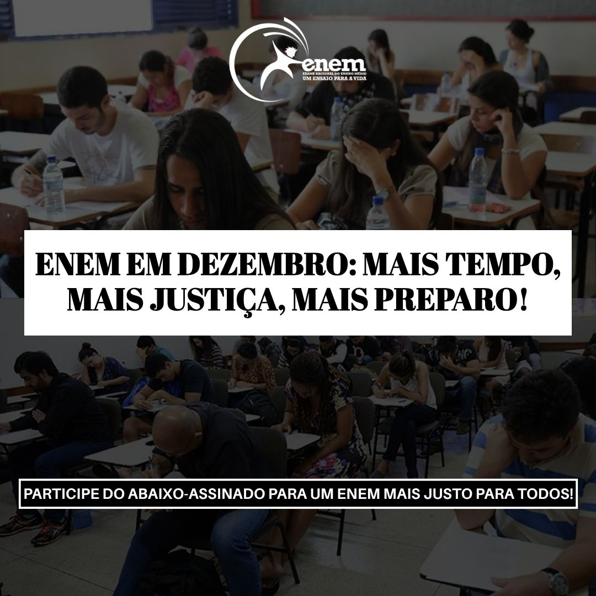

Por um ENEM mais justo!
Hoje, infelizmente milhares de estudantes têm de conviver com o estresse de realizar o vestibular mais concorrido do Brasil (ENEM) em pleno andamento de ano letivo. Por isso, é necessário se preocupar tanto com a reta final da escola e suas provas e tarefas que chegam neste período, quanto com o estudo específico voltado para o ENEM, o que prejudica alunos de todo o país, principalmente aqueles que frequentam escolas públicas, onde muitas vezes há prazos apertados e má organização da agenda.
Portanto, para ajudar os alunos, é evidente que mudar a data de realização do ENEM para o mês de dezembro é mais do que necessário para uma boa preparação, pois gera mais tempo de estudos e não há conflitos com o cronograma escolar.
Pensando nisso, nasceu o projeto de Lei n° 4914/2025. A sua proposta é mudar a data da realização do ENEM para a segunda quinzena do mês, garantindo uma preparação com maior tempo, com mais qualidade e menos conflituosa com a agenda escolar.
Esta iniciativa está sendo realizada pela Universidade Federal de Uberlândia (UFU), em parceria com o Colégio Nacional, no projeto “Formação Cidadã e Processo Legislativo”.
Venha lutar por esta causa tão importante e ajude a transformar a educação nacional! Basta assinar a petição e pronto! Juntos por um ENEM mais justo!